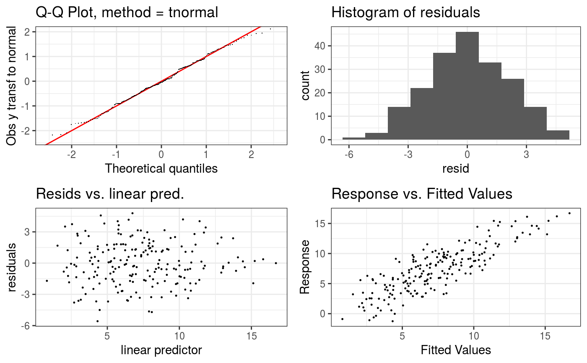

Takes a fitted GAM model and produces some diagnostic information about the fitting procedure and results. The default is to produce 4 residual plots, some information about the convergence of the smoothness selection optimization, and to run diagnostic tests of whether the basis dimension choises are adequate.
# S3 method for gamViz check( obj, type = c("auto", "deviance", "pearson", "response", "tunif", "tnormal"), k.sample = 5000, k.rep = 200, maxpo = 10000, a.qq = list(), a.hist = list(), a.respoi = list(), ... )
| obj | an object of class |
|---|---|
| type | type of residuals, see residuals.gamViz, used in all plots. |
| k.sample | above this k testing uses a random sub-sample of data. |
| k.rep | how many re-shuffles to do to get p-value for k testing. |
| maxpo | maximum number of residuals points that will be plotted in the scatter-plots.
If number of datapoints > |
| a.qq | list of arguments to be passed to |
| a.hist | list of arguments to be passed to |
| a.respoi | list of arguments to be passed to |
| ... | currently not used. |
An object of class checkGam, which is simply a list of ggplot objects.
This is a essentially a re-write of mgcv::gam.check using ggplot2. See
mgcv::gam.check for details.
#> Gu & Wahba 4 term additive modelb <- gam(y ~ s(x0) + s(x1) + s(x2) + s(x3), data = dat) b <- getViz(b) # Checks using default options check(b)#> #> Method: GCV Optimizer: magic #> Smoothing parameter selection converged after 8 iterations. #> The RMS GCV score gradient at convergence was 1.072609e-05 . #> The Hessian was positive definite. #> Model rank = 37 / 37 #> #> Basis dimension (k) checking results. Low p-value (k-index<1) may #> indicate that k is too low, especially if edf is close to k'. #> #> k' edf k-index p-value #> s(x0) 9.00 2.32 1.00 0.51 #> s(x1) 9.00 2.31 0.97 0.30 #> s(x2) 9.00 7.65 0.96 0.27 #> s(x3) 9.00 1.23 1.04 0.67#># Change some algorithmic and graphical parameters check(b, a.qq = list(method = "tnorm", a.cipoly = list(fill = "light blue")), a.respoi = list(size = 0.2), a.hist = list(bins = 10))#> #> Method: GCV Optimizer: magic #> Smoothing parameter selection converged after 8 iterations. #> The RMS GCV score gradient at convergence was 1.072609e-05 . #> The Hessian was positive definite. #> Model rank = 37 / 37 #> #> Basis dimension (k) checking results. Low p-value (k-index<1) may #> indicate that k is too low, especially if edf is close to k'. #> #> k' edf k-index p-value #> s(x0) 9.00 2.32 1.00 0.45 #> s(x1) 9.00 2.31 0.97 0.33 #> s(x2) 9.00 7.65 0.96 0.24 #> s(x3) 9.00 1.23 1.04 0.68